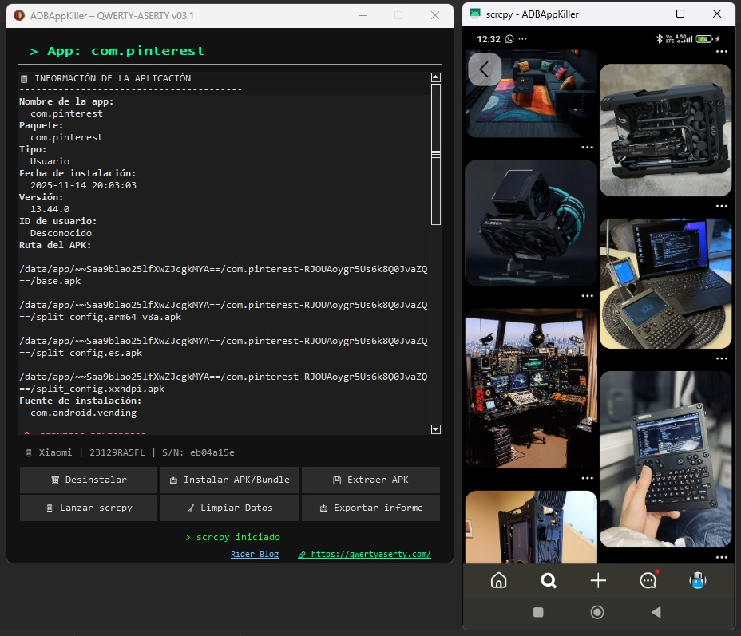
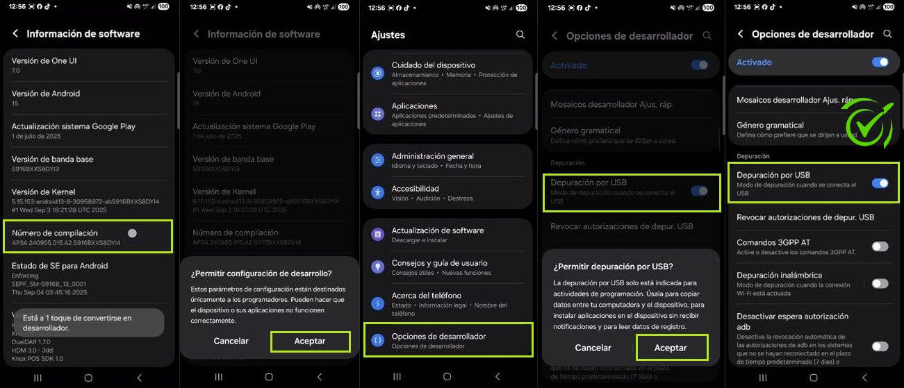
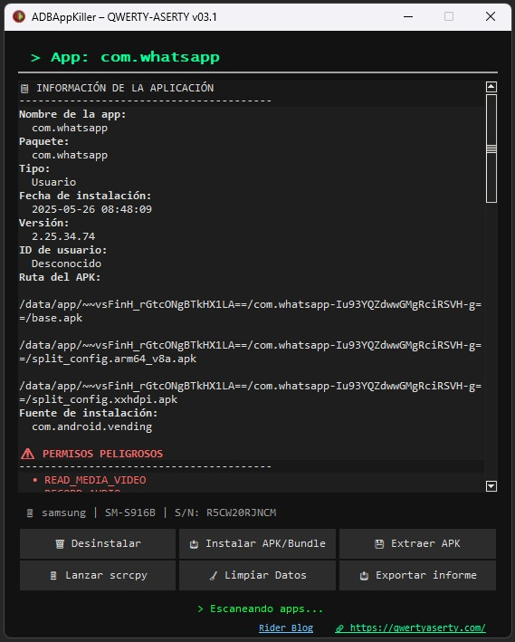
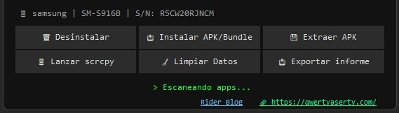

Es una herramienta portátil para Windows que te permite:
Todo esto sin rootear tu teléfono y con solo conectarlo por USB.

Antes de usar ADBAppKiller, asegúrate de cumplir lo siguiente:
Sigue estos pasos (pueden variar ligeramente según la marca):

Al abrir la aplicación por primera vez:

Elimina la app que estés usando en ese momento.
No funciona con apps del sistema (como Configuración, Teléfono, etc.).
Te permite instalar una app desde tu PC:
.apk (una sola app) o un .zip (app dividida en partes).Guarda en tu PC el archivo de la app que estés usando:
.apk..zip con varias partes.Útil para respaldar apps o instalarlas en otro dispositivo.
Abre una ventana en tu PC que muestra tu pantalla de teléfono en tiempo real.
Puedes tocar, deslizar y usar tu móvil desde la computadora.
Borra toda la información de la app (inicios de sesión, configuraciones, etc.).
Es como si la instalaras por primera vez, sin desinstalarla.
Guarda en un archivo de texto toda la información de la app actual:
Útil para compartir con soporte técnico o para tu propio registro.

| Mensaje | Qué significa | Qué hacer |
|---|---|---|
| ⛔ No hay dispositivo conectado | No detecta tu teléfono. | Conecta el cable USB y activa la Depuración USB. |
| ⛔ Dispositivo no autorizado | No aceptaste la clave RSA en el teléfono. | Desconecta y vuelve a conectar el cable. Acepta la ventana en el móvil. |
| ⛔ No se puede desinstalar app de sistema | Intentaste borrar una app esencial. | No es posible. Solo puedes desinstalar apps que tú instalaste. |
| 📁 Instalando ADB… | La app está descargando las herramientas necesarias. | Espere 1-2 minutos. No cierre la app. |
¿Es seguro usar ADBAppKiller?
Sí. No requiere root, no envía o recibe datos de internet (excepto al instalar ADB/scrcpy) y todo se ejecuta en tu
PC.
¿Puedo desinstalar apps del sistema?
No, y eso es intencional. Eliminar apps del sistema podría dañar tu teléfono.
¿Por qué no se detecta la app que abro?
Algunas apps (como launchers o el menú de inicio) se ignoran para evitar confusiones. Abre una app normal
(WhatsApp, Chrome, etc.).
¿Necesito internet?
Solo la primera vez, para instalar ADB o scrcpy. Luego, funciona offline.
- Desarrollado por: QWERTY-ASERTY
- Sitio web: www.qwertyaserty.com
- Blog de soporte: Rider Blog
ADBAppKiller